iContadini Ugento
iContadini è un'azienda agricola di Ugento, nel cuore del Salento.
Coltiva, raccoglie e lavora a mano conserve, sughi, legumi e prodotti da forno, con una filiera corta che va dal campo alla tavola.
In BriefMe, agenzia di performance marketing e creative design, ho contribuito alla comunicazione del brand attraverso campagne ADS B2C e B2B, contenuti per i social, video per stories, affissioni e packaging per il lancio di nuovi prodotti. Un lavoro trasversale, sviluppato in diversi formati e lingue, per garantire coerenza e continuità alla comunicazione su tutti i canali.
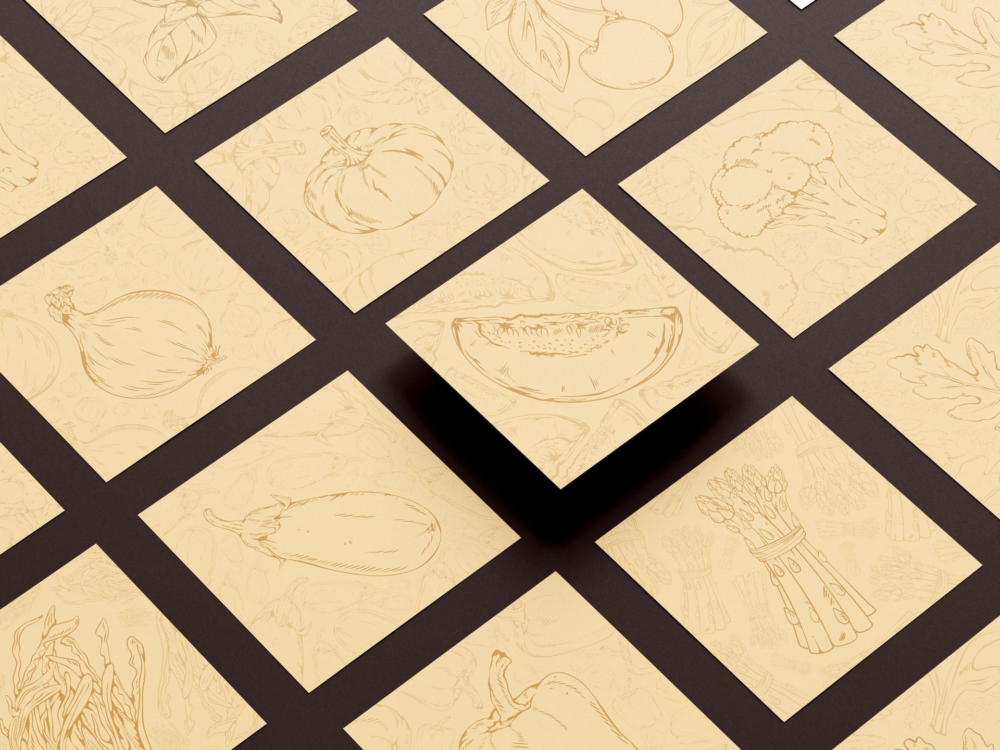

Una piccola parte
del raccolto
Per iContadini ho seguito molte più campagne di quelle qui presenti: lanci di prodotto, promo stagionali, box regalo, regalistica aziendale e molto altro. Questa è solo una piccola selezione. Ogni campagna viene adattata ai diversi formati e canali, dal feed alle stories, dai reel ai banner, e anche a diverse lingue quando necessario.
Stories dal campo
Le ADS si muovono anche in verticale: video brevi per stories e reel, tra lanci di prodotto, offerte del mese, rubriche e la newsletter. Scegli un video o lasciali scorrere uno dopo l'altro.
Social a km zero
Il PED segue il ritmo dell'orto: rubriche fisse come il Calendario dell'orto e l'Oroscopo contadino, i prodotti raccontati dal campo alla tavola, le promo e le ricorrenze. Filtra il feed, scorri la striscia e apri un post per vederlo da vicino: i caroselli si sfogliano slide per slide, come su Instagram.
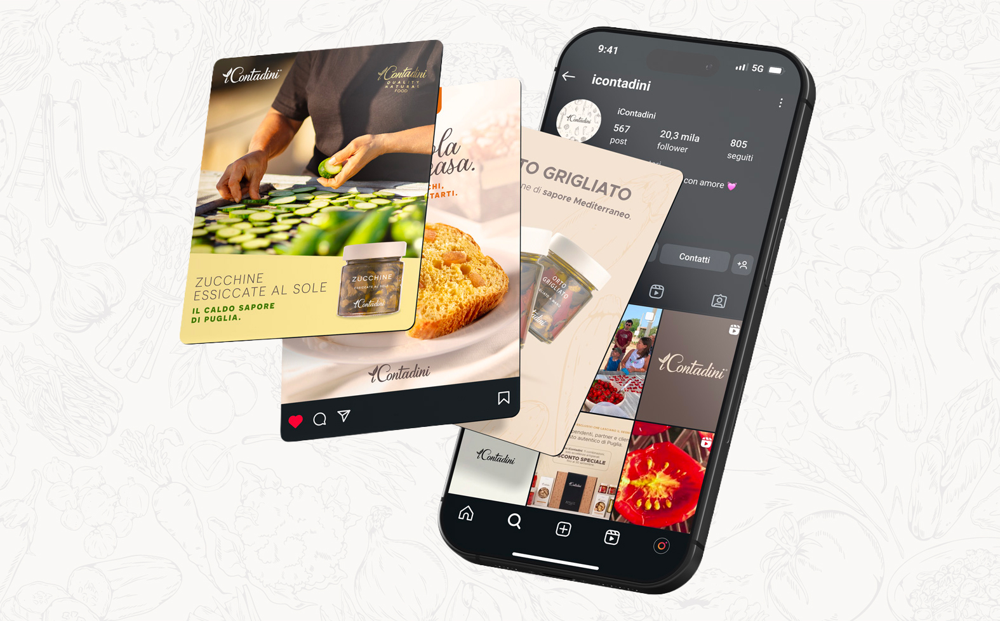

Legumi in posa
Ogni zuppa ha due scatti: in studio, sul colore che racconta il legume, e dall'alto, immersa nel letto dei suoi semi.
Scegli una zuppa e la sezione prende il suo colore.
Zuppa di ceci
- 100% italiani
- Senza conservanti
- Pronta in 2'
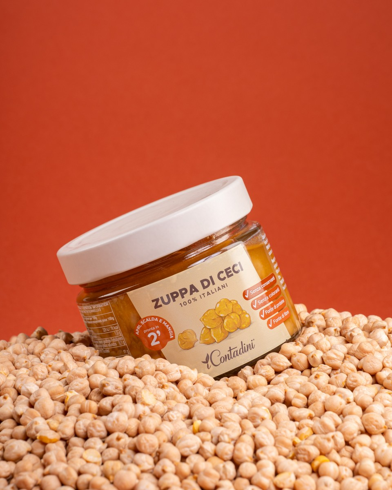
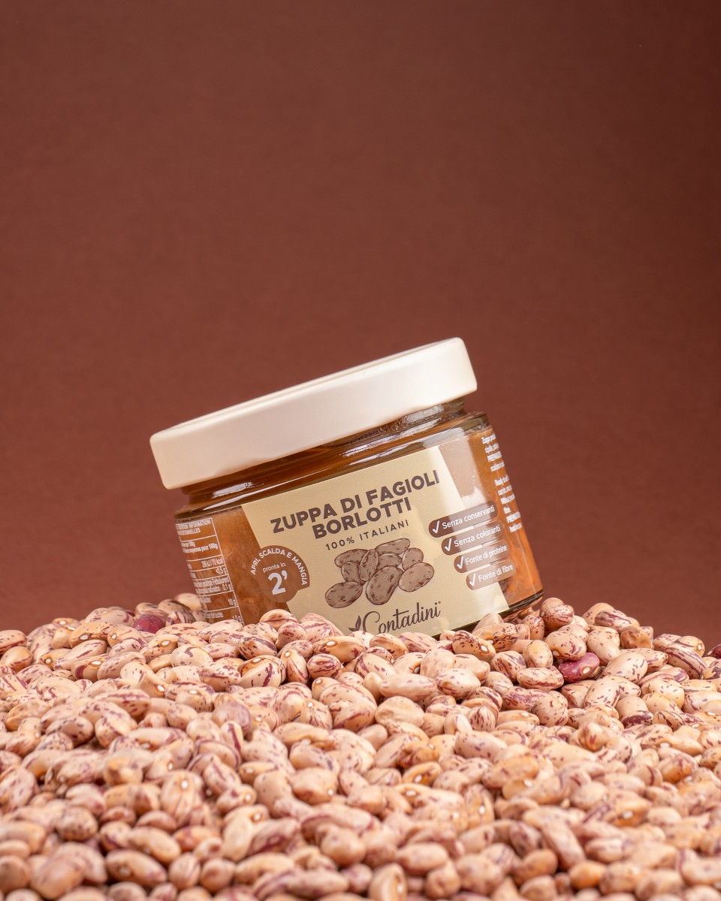
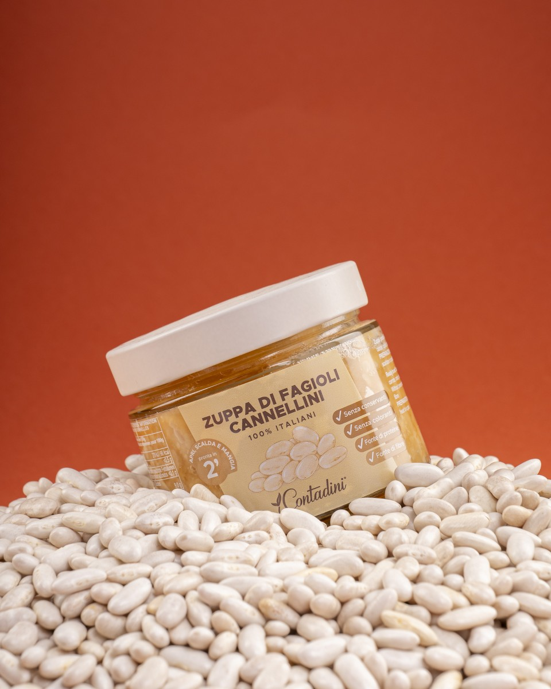
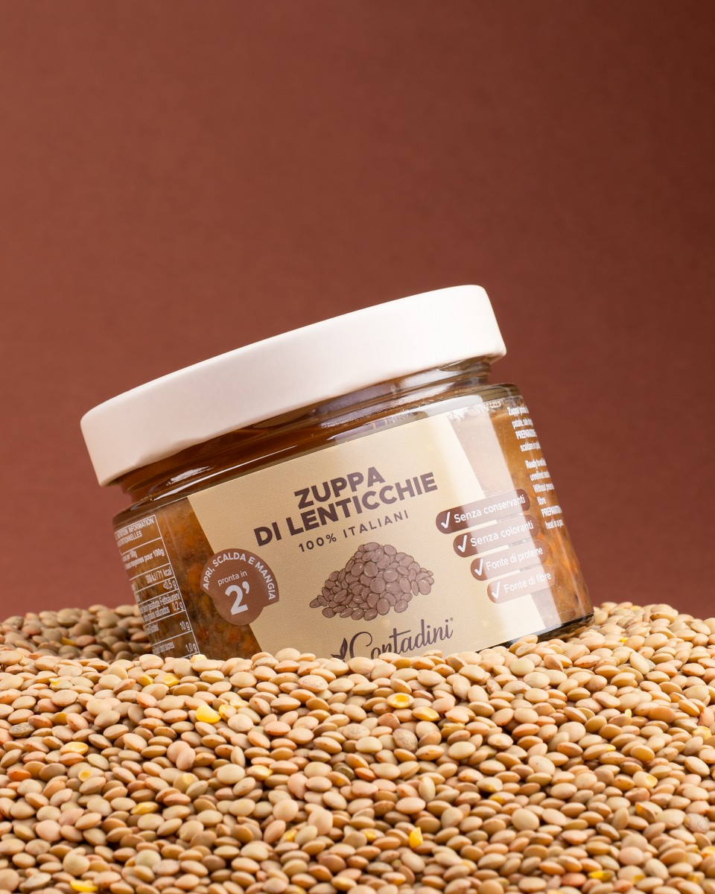
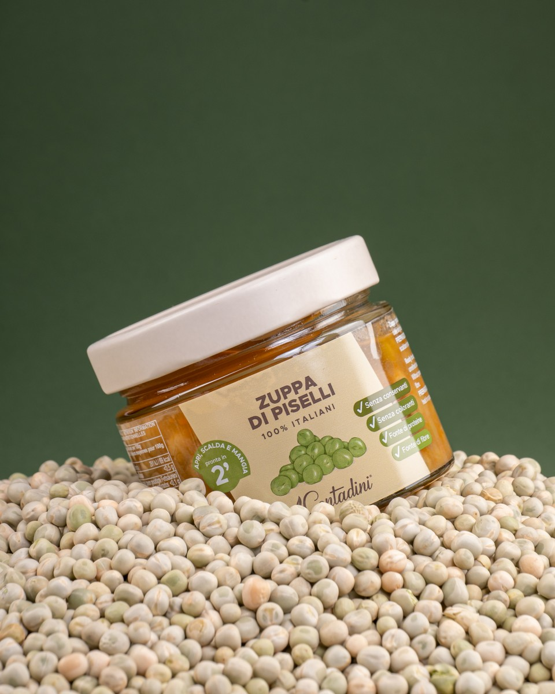
In studio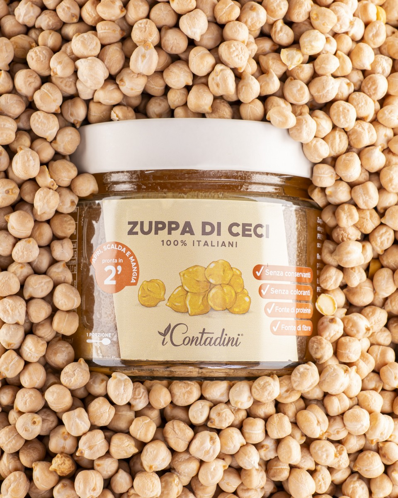
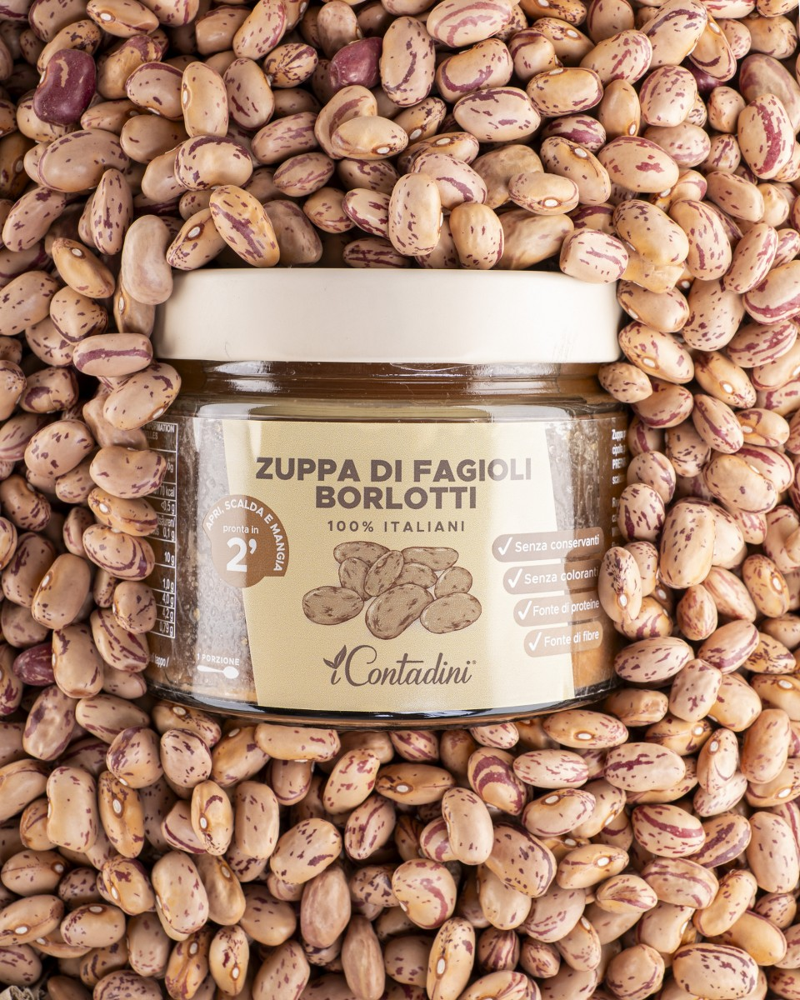
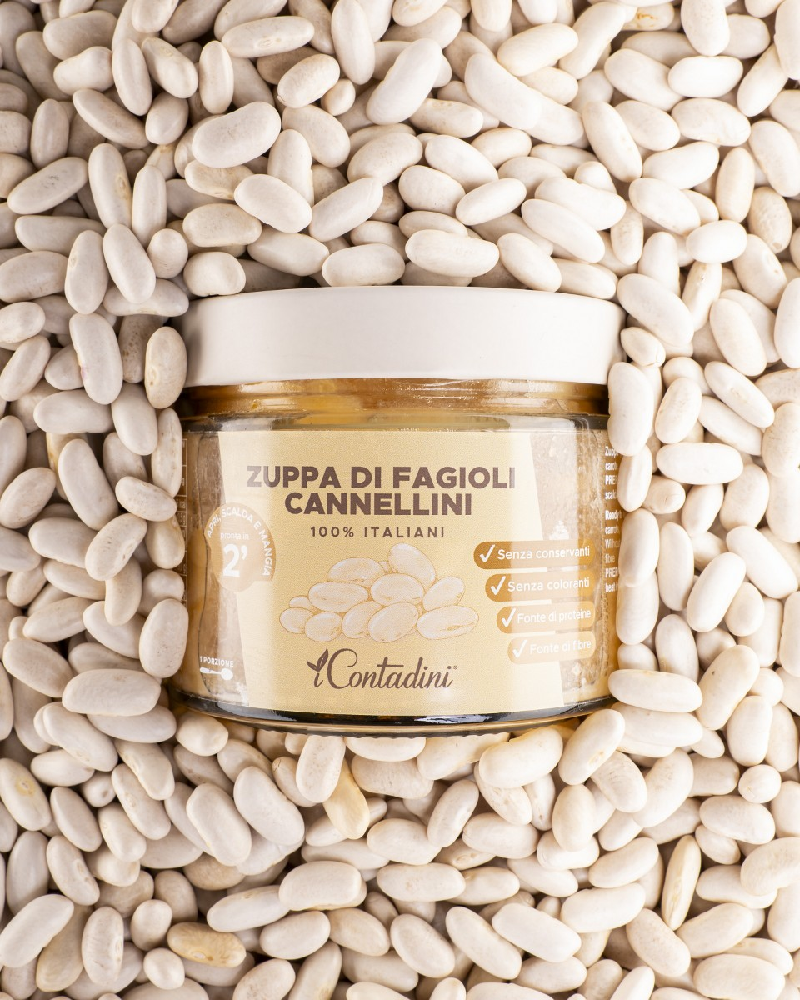
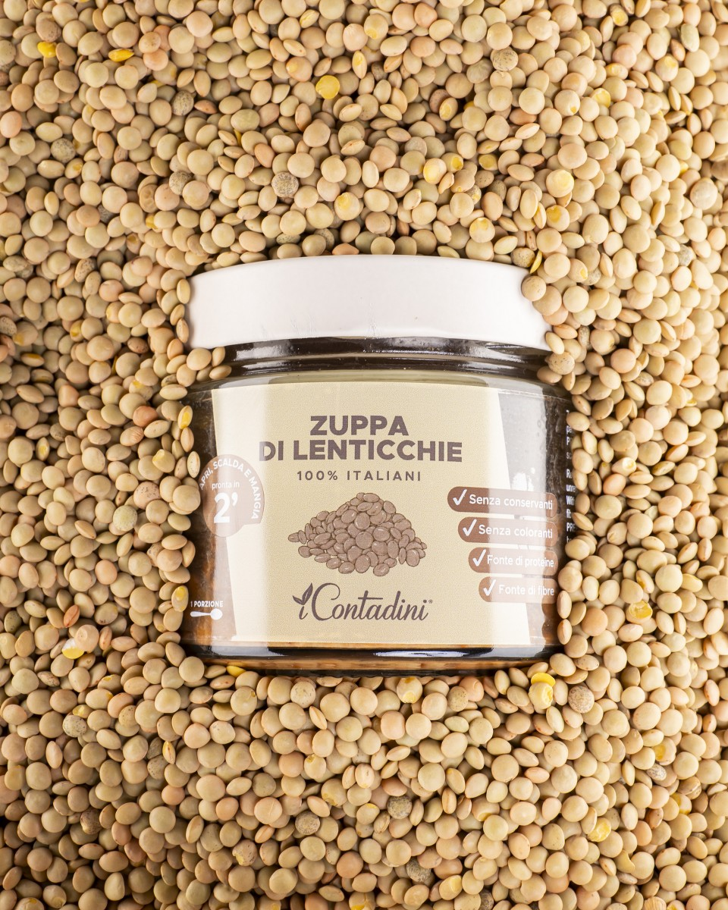
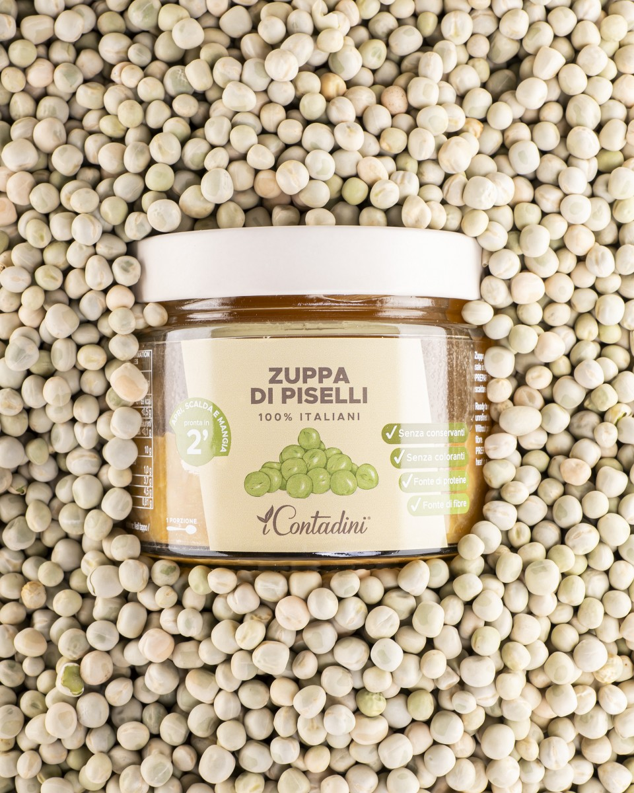
Dall'altoIl Salento, in grande
Il racconto esce dal feed e arriva in strada: l'esperienza agricola del Salento sul cartellone, il Salento autentico servito in tavola e la frisella con la degustazione gratuita.
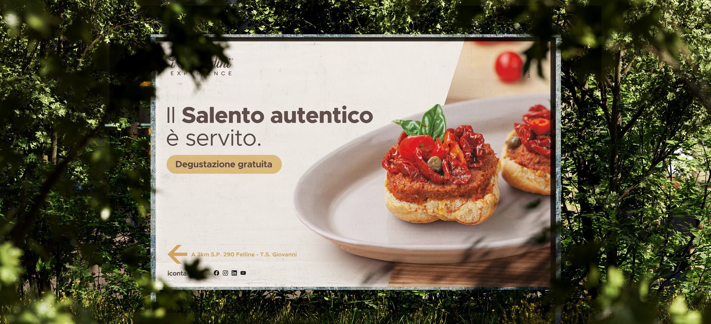
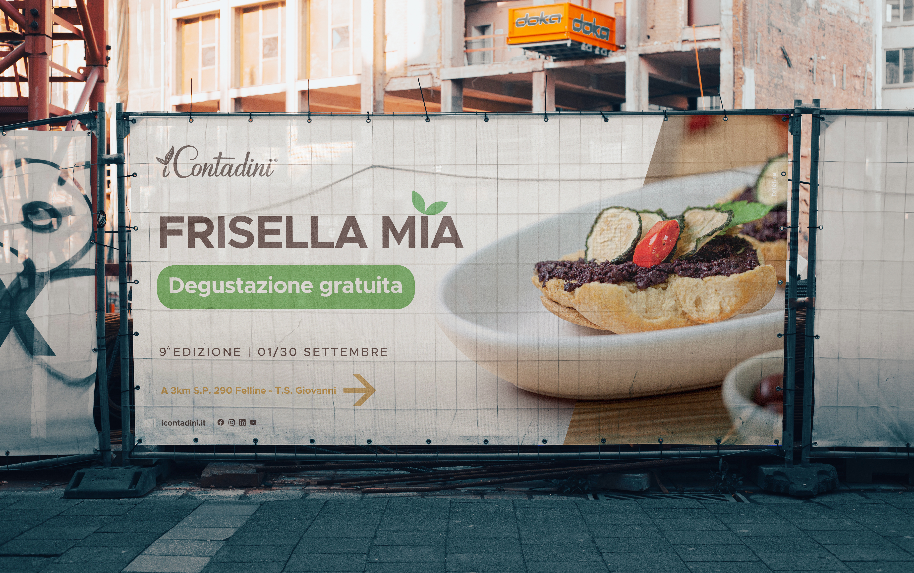
01 / 03Da sfogliare, pagina per pagina
Il catalogo della regalistica: la storia dei tre fratelli, i prodotti e le box regalo 2025, raccolti in un libretto. Trascina le pagine, cliccale o usa le frecce per sfogliarlo.
Assaggiali subito ;)
Conserve, sughi, legumi e box regalo coltivati e lavorati a mano a Ugento.
iContadiniAzienda agricola · Ugento (LE)
Coltiviamo, raccogliamo e lavoriamo a mano i nostri prodotti.
- Filiera corta
- Prodotti tipici pugliesi
- Box regalo